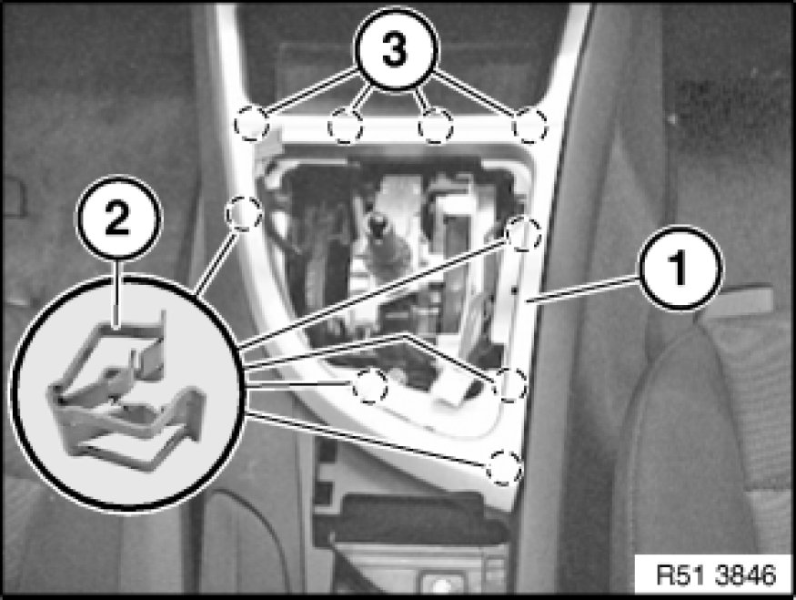
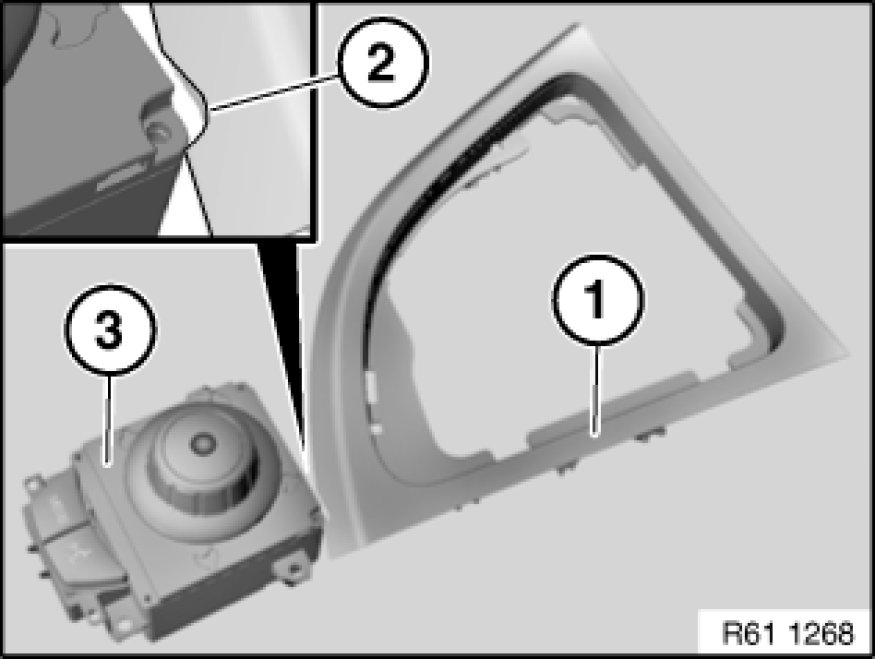

51 16 ... Removing and Installing/Replacing Trim For Gearshift
51 16 ... - Removing and installing/replacing trim for gearshift

Important!
Risk of damage!
When working on trim panel components, make sure that the sensitive surfaces are not scratched or damaged.

Necessary preliminary tasks:
Version with controller:
- Remove controller
Version with manual transmission:
- Remove gaiter for gear lever 25 11 081 Replacing Shift Lever Cover
Version with automatic transmission:
- Remove finisher for preselector lever 51 16 210 Removing and Installing/Replacing Trim For Preselector Lever

Pull trim (1) upwards and thereby release from retainers (2) and catches (3).
Installation Note:
Cables must not be jammed.
Retainers (2) and catches (3) must not be damaged.

If replacing on version with controller:
Provide trim (1) with opening (2) for controller (3).
Note:
Opening (2) is marked on the underside of the trim (1).